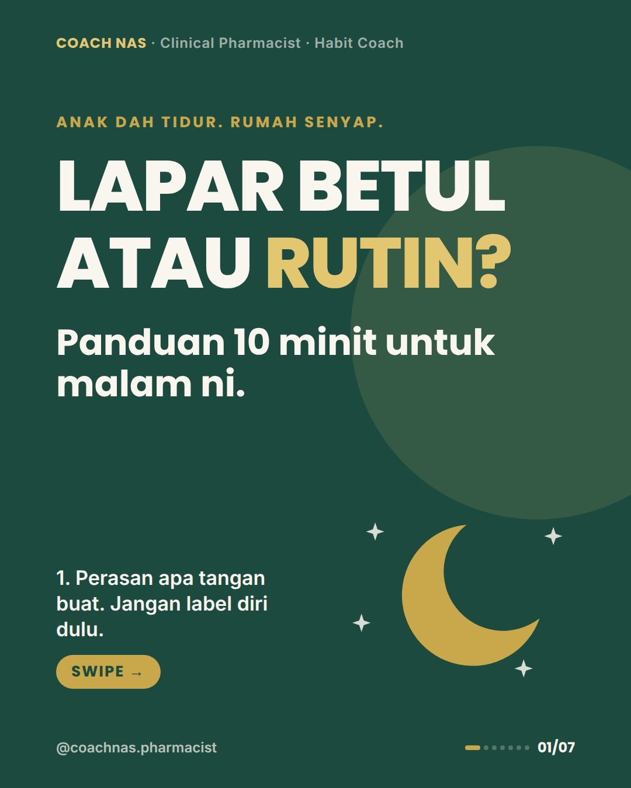
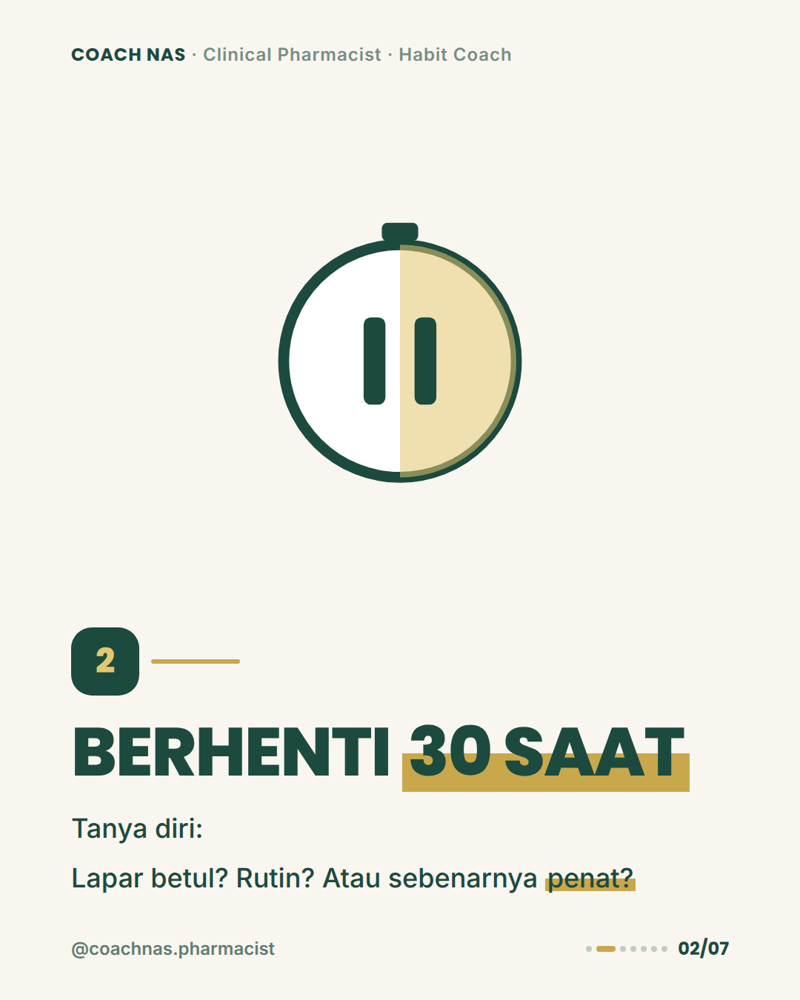
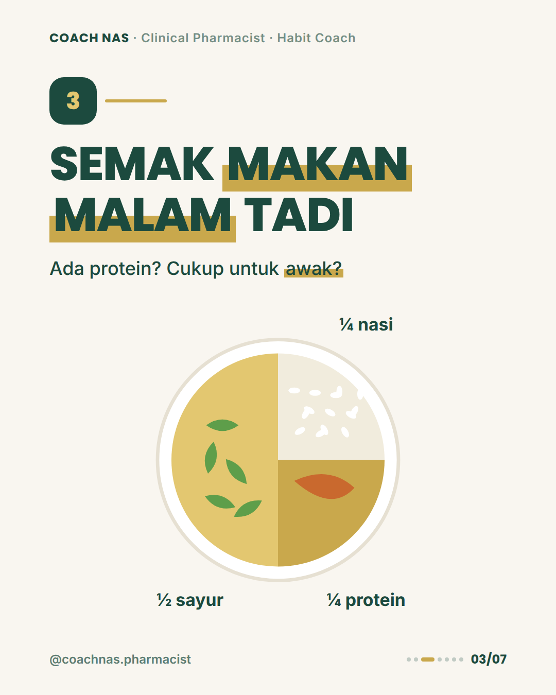
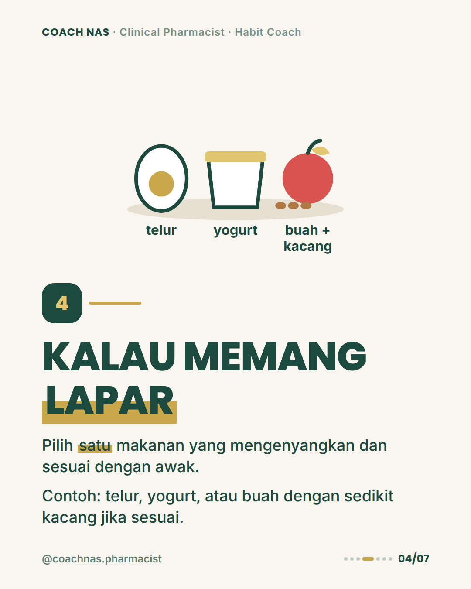
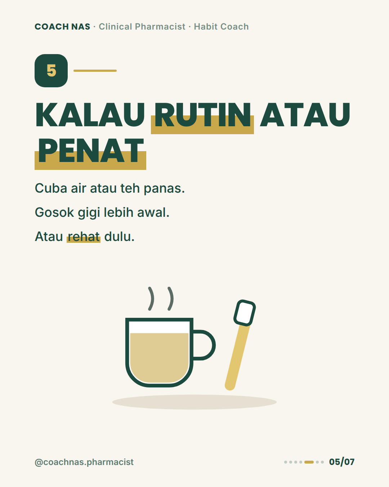
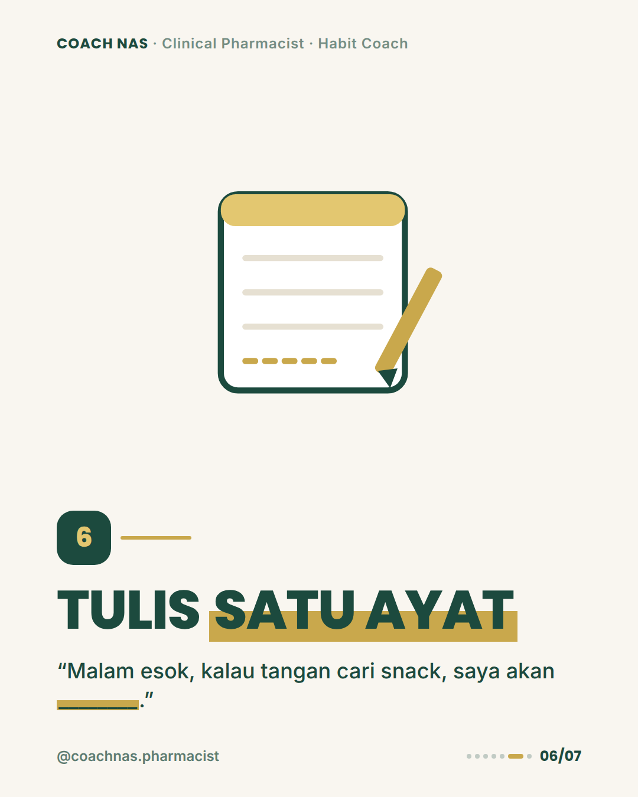
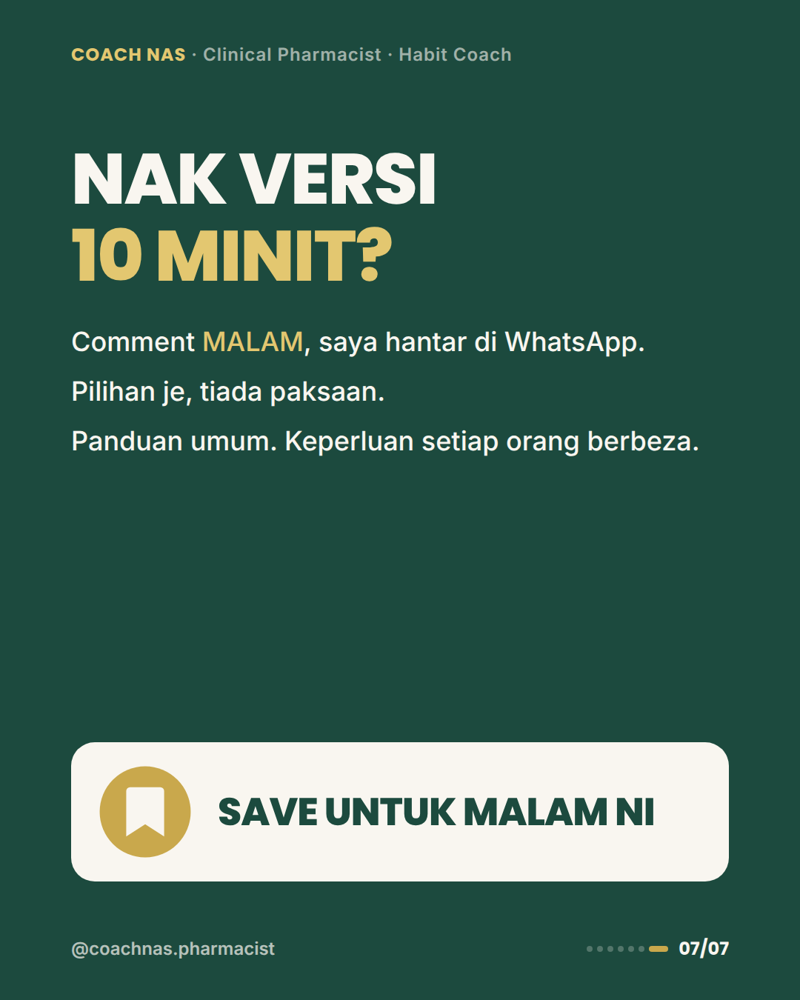

Thu 22 Okt · Snack Lepas Anak Tidur: Lapar Betul atau Rutin?
7 slides · 1080×1350 · PDF

slide-01.png · cover

slide-02.png · step

slide-03.png · step

slide-04.png · step

slide-05.png · step

slide-06.png · step

slide-07.png · cta